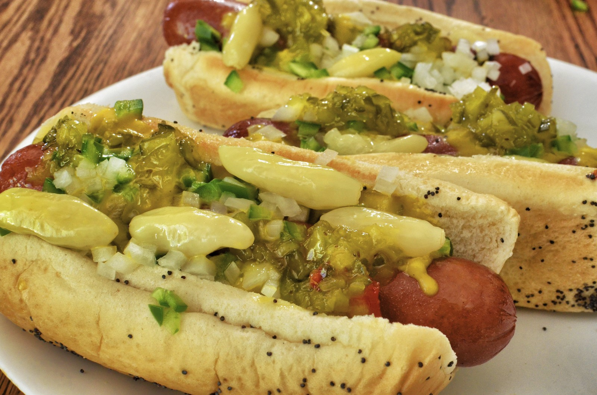

|

|
|
Ingredients:
- 4 hot dogs with natural casings
- 1 hot dog rolls, sliced
- 1 small onion, diced
- 1 (10 ounce) can chile sauce without beans
- 4 tablespoons prepared yellow mustard, or to taste
- Preheat an outdoor grill for medium-high heat.
- Place hot dogs on the grill; cook until browned, 5 to 8 minutes, turning once, or until done to suit your taste.
Lightly grill hot dog rolls.
- Meanwhile, place the chile sauce in a small microwave-safe bowl; cook 1 minute. Stir, and cook 1 minute more.
- Place hot dogs on buns. Top each with chile sauce, onion, and 1 tablespoon mustard, or to taste.
|
|